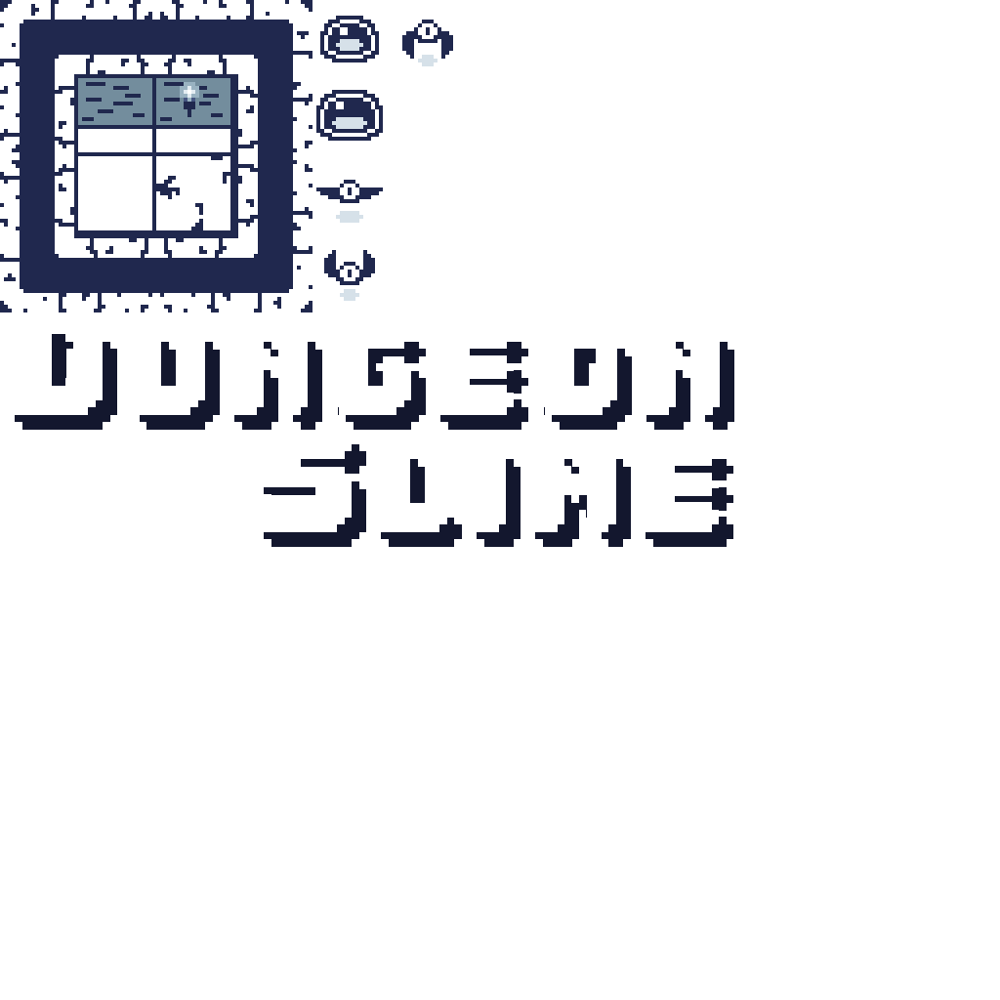

Chapter 17: Scene Management
Learn how to implement scene management to handle different game screens like menus, gameplay, and transitions between scenes.
In game development, a scene (sometimes called a screen or state) represents a distinct section of the game. Each scene typically has its own update and draw logic, as well as its own set of game objects. Common examples of scenes include title screens, menus, gameplay screens, game over screens, and more. Scenes help organize the game's code by separating different parts of the game into self-contained modules. This makes the code more manageable as the game grows in complexity and offers several advantages:
- Improved organization: Each scene contains only the code and assets relevant to that part of the game.
- Memory management: Load assets only when needed and unload them when leaving a scene.
- Simplified state handling: Each scene maintains its own state without affecting others.
- Code reusability: Create reusable scene templates for common game screens.
Our game logic is currently contained within the single Game1 class. Adding more screens to it would make the code harder to manage, so instead we need to start thinking about breaking it down into scenes. In this chapter, you will:
- Learn the concept of scene management and its benefits
- Create a base Scene class with a consistent lifecycle
- Implement scene transitions using a manager
- Create a title scene and gameplay scene for our game
- Refactor our existing game to use the scene system
We will being by first defining the lifecycle of a scene that will be followed.
Scene Lifecycle
In Chapter 03, you learned the basic lifecycle of the Game class. To be consistent, we can borrow from this lifecycle and adapt it for our scenes. The order of operations for this lifecycle will be:
- A scene is created and set as the active scene.
- The active scene is first initialized and content loaded.
- The active scene is updated and drawn each cycle.
- When transitioning to a new scene, or when the scene ends:
- The current scene is unloaded and disposed of.
- The new scene is initialized and content loaded.
- The new scene becomes the active scene and the cycle begins again until the game is told to exit.
The Scene Base Class
The base Scene class is an abstract class for scenes that provides common functionality for all scenes. In our actual game, we'll create concrete implementations of this, like a title scene.
To get started, in the MonoGameLibrary project:
Create a new directory named Scenes.
Add a new class file named Scene.cs to the Scenes directory you just created.
Add the following code as the initial structure for the class:
using System; using Microsoft.Xna.Framework; using Microsoft.Xna.Framework.Content; namespace MonoGameLibrary.Scenes; public abstract class Scene : IDisposable { }Note
Just like with the
AudioControllerin Chapter 14, eachSceneimplements theIDisposableinterface. This provides a standardized in method to release the resources held by a scene when it is no longer needed.
Scene Properties
Add the following properties to the Scene class:
/// <summary>
/// Gets the ContentManager used for loading scene-specific assets.
/// </summary>
/// <remarks>
/// Assets loaded through this ContentManager will be automatically unloaded when this scene ends.
/// </remarks>
protected ContentManager Content { get; }
/// <summary>
/// Gets a value that indicates if the scene has been disposed of.
/// </summary>
public bool IsDisposed { get; private set; }
- The
Contentproperty is the scene's personal ContentManager that can be used to load scene specific content that will be unloaded when the scene ends. This helps manage memory usage by only loading what is needed for a specific scene. - The
IsDisposedproperty is used to track if the scene has been disposed of since it implements theIDisposableinterface.
Scene Constructor
Add the following constructor and finalizer to the Scene class:
/// <summary>
/// Creates a new scene instance.
/// </summary>
public Scene()
{
// Create a content manager for the scene
Content = new ContentManager(Core.Content.ServiceProvider);
// Set the root directory for content to the same as the root directory
// for the game's content.
Content.RootDirectory = Core.Content.RootDirectory;
}
// Finalizer, called when object is cleaned up by garbage collector.
~Scene() => Dispose(false);
- The constructor initializes the scene's content manager and sets the root directory to match that of the base game's content manager.
- The finalizer is called by the garbage collector automatically when a scene object is collected which just calls the
Disposemethod to ensure resources are disposed of properly.
Scene Methods
Add the following methods to the Scene class:
/// <summary>
/// Initializes the scene.
/// </summary>
/// <remarks>
/// When overriding this in a derived class, ensure that base.Initialize()
/// still called as this is when LoadContent is called.
/// </remarks>
public virtual void Initialize()
{
LoadContent();
}
/// <summary>
/// Override to provide logic to load content for the scene.
/// </summary>
public virtual void LoadContent() { }
/// <summary>
/// Unloads scene-specific content.
/// </summary>
public virtual void UnloadContent()
{
Content.Unload();
}
/// <summary>
/// Updates this scene.
/// </summary>
/// <param name="gameTime">A snapshot of the timing values for the current frame.</param>
public virtual void Update(GameTime gameTime) { }
/// <summary>
/// Draws this scene.
/// </summary>
/// <param name="gameTime">A snapshot of the timing values for the current frame.</param>
public virtual void Draw(GameTime gameTime) { }
These methods are setup similar to how the Game class works to keep the workflow consistent:
Initializeis called only once when the scene becomes the active scene. It can be overridden by the derived class to provide scene specific initialization logic. It also calls theLoadContentmethod the same way theGameclass is done for consistency.LoadContentis called only once, at the end of theInitializemethod. It can be overridden by the derived class to load scene specific content.UnloadContentis called only once when a scene is ending due to a transition to a new scene. It can be overridden by the derived class to perform unloading of any scene specific content.Updateis called once at the start of every game cycle. It can be overidden to provide the update logic for the scene.Drawis called once every game cycle, directly afterUpdate. It can be overridden to provide the draw logic for the scene.
IDisposable Implementation
Add the following methods to the Scene class to complete the implementation of the IDisposable interface:
/// <summary>
/// Disposes of this scene.
/// </summary>
public void Dispose()
{
Dispose(true);
GC.SuppressFinalize(this);
}
/// <summary>
/// Disposes of this scene.
/// </summary>
/// <param name="disposing">'
/// Indicates whether managed resources should be disposed. This value is only true when called from the main
/// Dispose method. When called from the finalizer, this will be false.
/// </param>
protected virtual void Dispose(bool disposing)
{
if (IsDisposed)
{
return;
}
if (disposing)
{
UnloadContent();
Content.Dispose();
}
}
Scene Management
With the base Scene class defined, the Core class needs to be updated to handle management of the scenes, including update, drawing, and changing scenes. Open the Core.cs file in the MonoGameLibrary project and make the following changes:
using System;
using Microsoft.Xna.Framework;
using Microsoft.Xna.Framework.Content;
using Microsoft.Xna.Framework.Graphics;
using Microsoft.Xna.Framework.Input;
using MonoGameLibrary.Audio;
using MonoGameLibrary.Input;
using MonoGameLibrary.Scenes;
namespace MonoGameLibrary;
public class Core : Game
{
internal static Core s_instance;
/// <summary>
/// Gets a reference to the Core instance.
/// </summary>
public static Core Instance => s_instance;
// The scene that is currently active.
private static Scene s_activeScene;
// The next scene to switch to, if there is one.
private static Scene s_nextScene;
/// <summary>
/// Gets the graphics device manager to control the presentation of graphics.
/// </summary>
public static GraphicsDeviceManager Graphics { get; private set; }
/// <summary>
/// Gets the graphics device used to create graphical resources and perform primitive rendering.
/// </summary>
public static new GraphicsDevice GraphicsDevice { get; private set; }
/// <summary>
/// Gets the sprite batch used for all 2D rendering.
/// </summary>
public static SpriteBatch SpriteBatch { get; private set; }
/// <summary>
/// Gets the content manager used to load global assets.
/// </summary>
public static new ContentManager Content { get; private set; }
/// <summary>
/// Gets a reference to to the input management system.
/// </summary>
public static InputManager Input { get; private set; }
/// <summary>
/// Gets or Sets a value that indicates if the game should exit when the esc key on the keyboard is pressed.
/// </summary>
public static bool ExitOnEscape { get; set; }
/// <summary>
/// Gets a reference to the audio control system.
/// </summary>
public static AudioController Audio { get; private set; }
/// <summary>
/// Creates a new Core instance.
/// </summary>
/// <param name="title">The title to display in the title bar of the game window.</param>
/// <param name="width">The initial width, in pixels, of the game window.</param>
/// <param name="height">The initial height, in pixels, of the game window.</param>
/// <param name="fullScreen">Indicates if the game should start in fullscreen mode.</param>
public Core(string title, int width, int height, bool fullScreen)
{
// Ensure that multiple cores are not created.
if (s_instance != null)
{
throw new InvalidOperationException($"Only a single Core instance can be created");
}
// Store reference to engine for global member access.
s_instance = this;
// Create a new graphics device manager.
Graphics = new GraphicsDeviceManager(this);
// Set the graphics defaults
Graphics.PreferredBackBufferWidth = width;
Graphics.PreferredBackBufferHeight = height;
Graphics.IsFullScreen = fullScreen;
// Apply the graphic presentation changes
Graphics.ApplyChanges();
// Set the window title
Window.Title = title;
// Set the core's content manager to a reference of hte base Game's
// content manager.
Content = base.Content;
// Set the root directory for content
Content.RootDirectory = "Content";
// Mouse is visible by default
IsMouseVisible = true;
}
protected override void Initialize()
{
base.Initialize();
// Set the core's graphics device to a reference of the base Game's
// graphics device.
GraphicsDevice = base.GraphicsDevice;
// Create the sprite batch instance.
SpriteBatch = new SpriteBatch(GraphicsDevice);
// Create a new input manager
Input = new InputManager();
// Create a new audio controller.
Audio = new AudioController();
}
protected override void UnloadContent()
{
// Dispose of the audio controller.
Audio.Dispose();
base.UnloadContent();
}
protected override void Update(GameTime gameTime)
{
// Update the input manager.
Input.Update(gameTime);
// Update the audio controller.
Audio.Update();
if (ExitOnEscape && Input.Keyboard.WasKeyJustPressed(Keys.Escape))
{
Exit();
}
// if there is a next scene waiting to be switch to, then transition
// to that scene
if (s_nextScene != null)
{
TransitionScene();
}
// If there is an active scene, update it.
if (s_activeScene != null)
{
s_activeScene.Update(gameTime);
}
base.Update(gameTime);
}
protected override void Draw(GameTime gameTime)
{
// If there is an active scene, draw it.
if (s_activeScene != null)
{
s_activeScene.Draw(gameTime);
}
base.Draw(gameTime);
}
public static void ChangeScene(Scene next)
{
// Only set the next scene value if it is not the same
// instance as the currently active scene.
if (s_activeScene != next)
{
s_nextScene = next;
}
}
private static void TransitionScene()
{
// If there is an active scene, dispose of it
if (s_activeScene != null)
{
s_activeScene.Dispose();
}
// Force the garbage collector to collect to ensure memory is cleared
GC.Collect();
// Change the currently active scene to the new scene
s_activeScene = s_nextScene;
// Null out the next scene value so it doesn't trigger a change over and over.
s_nextScene = null;
// If the active scene now is not null, initialize it.
// Remember, just like with Game, the Initialize call also calls the
// Scene.LoadContent
if (s_activeScene != null)
{
s_activeScene.Initialize();
}
}
}
The key changes here are:
- The
using MonoGameLibrary.Scenes;using directive was added so we have access to theSceneclass. - The fields
_activeSceneand_nextScenewere added to track which scene is currently active and which scene, if any, to switch to. - In
Update:- A check is made to see if there is a next scene, and if so,
TransitionSceneis called to gracefully switch from the current to the next. - A check is made to see if there is an active scene, and if so, updates it.
- A check is made to see if there is a next scene, and if so,
- An override for the
Drawmethod was added where a check is made to see if there is an active scene, and if so, draws it. - The
ChangeScenemethod was added which can be called when we want to tell the core to change from one scene to another one. - The
TransitionScenemethod was add that gracefully transitions from the current scene to the next scene by- A check is made to see if there is an active scene, and if so, disposes it.
- The garbage collector is told to perform a collection to clear out memory from the disposal of the current scene.
- The next scene is set as the current scene.
- A check is made to see if there is now a current scene, and if so, initializes it.
Tip
Notice that we use a two-step process for scene transitions with separate _activeScene and _nextScene fields. This design allows the current scene to complete its update/draw cycle before the transition occurs, preventing potential issues that could arise from changing scenes in the middle of processing. The actual transition happens at a controlled point in the game loop, ensuring clean disposal of the old scene before initializing the new one.
Updating the Game
With the scene architecture in place, the game can now be updated so that it is broken down into scenes. We'll create two scenes; a title scene and a gameplay scene.
The Title Scene
The title scene serves as the game's initial starting point, making the first impression on the player when they first launch the game. For our game, this scene will display stylized text for the title of the game and a prompt for an action for the user to perform to start the game. The stylized text is a graphic that was created and added to the texture atlas which features the title of the game with a drop shadow effect on the text. So first, let's update the texture atlas to the new version with the title graphic. Download the new texture atlas below by right-clicking the following image and saving it as atlas.png in the Content/images directory of the game project, overwriting the existing one:
|  |
|---|
| Figure 17-1: The texture atlas for our game updated to include the title sprite |
Next, open the atlas-definition.xml file and add the region for the title sprite:
<?xml version="1.0" encoding="utf-8"?>
<TextureAtlas>
<Texture>images/atlas</Texture>
<Regions>
<Region name="slime-1" x="320" y="0" width="80" height="80" />
<Region name="slime-2" x="320" y="80" width="80" height="80" />
<Region name="bat-1" x="320" y="160" width="80" height="80" />
<Region name="bat-2" x="320" y="240" width="80" height="80" />
<Region name="bat-3" x="400" y="0" width="80" height="80" />
<Region name="title-card" x="0" y="320" width="751" height="240" />
</Regions>
<Animations>
<Animation name="slime-animation" delay="200">
<Frame region="slime-1" />
<Frame region="slime-2" />
</Animation>
<Animation name="bat-animation" delay="200">
<Frame region="bat-1" />
<Frame region="bat-2" />
<Frame region="bat-1" />
<Frame region="bat-3" />
</Animation>
</Animations>
</TextureAtlas>
With the atlas now updated, create the TitleScene class file. In the main game project:
Create a new directory named Scenes. We'll put all of our game specific scenes here.
Add a new class file named TitleScene.cs to the Scenes directory you just created.
Add the following code as the initial structure for the class.
using Microsoft.Xna.Framework; using Microsoft.Xna.Framework.Content; using Microsoft.Xna.Framework.Graphics; using Microsoft.Xna.Framework.Input; using Microsoft.Xna.Framework.Media; using MonoGameLibrary; using MonoGameLibrary.Graphics; using MonoGameLibrary.Scenes; namespace DungeonSlime.Scenes; public class TitleScene : Scene { }
Title Scene Fields
Add the following fields to the TitleScene class:
private const string PRESS_ENTER = "Press Enter To Start";
// The font to use to render normal text.
private SpriteFont _font;
// The sprite to draw for the stylized title
private Sprite _titleSprite;
// The position to draw the title sprite at.
private Vector2 _titlePos;
// The position to draw the press enter text at.
private Vector2 _pressEnterPos;
// The origin to set for the press enter text when drawing it.
private Vector2 _pressEnterOrigin;
- The
PRESS_ENTERconstant is the text we'll draw for the press enter prompt for the user. - The
_fontfield stores a reference to the sprite font we'll load to render the press enter prompt with. - The
_titleSpritefield stores a reference the sprite we'll render for the stylized title from the texture atlas - The
_titlePosand_pressEnterPosfields store the precalculated positions for the title sprite and the press enter prompt text when they are drawn. Since they are stationary, we can just calculate the positions once and store it instead of calculating it each frame. - The
_pressEnterOriginfield stores the precalculated origin for hte press enter prompt text when it is drawn. Like with the position, we only need to calculate this once and store it instead of calculating it each frame.
Title Scene Methods
The TitleScene class will override the various methods from the base Scene class that it derives from to provide the initialization, content loading, update, and drawing logic.
Title Scene Initialize
Add the following override for the Initialize method to the TitleScene class:
public override void Initialize()
{
// LoadContent is called during base.Initialize().
base.Initialize();
// While on the title screen, we can enable exit on escape so the player
// can close the game by pressing the escape key.
Core.ExitOnEscape = true;
// Get the bounds of the screen for position calculations
Rectangle screenBounds = Core.GraphicsDevice.PresentationParameters.Bounds;
// Precalculate the positions and origins for texts and the slime sprite
// so we're not calculating it every draw frame.
_titlePos = new Vector2(
screenBounds.Width * 0.5f,
80 + _titleSprite.Height * 0.5f);
// Center the origin of the title sprite.
_titleSprite.CenterOrigin();
// Precalculate the position of for the press enter text so that it is
// centered horizontally and place 100 pixels above the bottom of the
// screen.
_pressEnterPos = new Vector2(
screenBounds.Width * 0.5f,
screenBounds.Height - 100
);
// Precalculate the center origin of the press enter text.
Vector2 pressEnterSize = _font.MeasureString(PRESS_ENTER);
_pressEnterOrigin = pressEnterSize * 0.5f;
}
- We set the
Core.ExitOnEscapeto true to allow players to exit the game when on the title screen by pressing the escape key. - The bounds of the screen is captures by using the
Core.GraphicsDevice.PresentationParameters.Boundsvalue. - The position to draw the title sprite is precalculated so that it will be centered horizontally and 80px down from the top of the screen. The origin is set to center.
- The position to draw the press enter prompt is precalculated so that it will be centered horizontally and 100 px above the bottom of the screen. The string is measured and used to center the origin for the text.
Title Scene LoadContent
Add the following override for the LoadContent method to the TitleScene class:
public override void LoadContent()
{
// Load the font for the standard txt.
_font = Core.Content.Load<SpriteFont>("fonts/gameFont");
// Create a texture atlas from the XML configuration file.
TextureAtlas atlas = TextureAtlas.FromFile(Core.Content, "images/atlas-definition.xml");
_titleSprite = atlas.CreateSprite("title-card");
}
- The font used to draw the press enter prompt is loaded.
- The texture atlas is loaded using the XML configuration file.
- The
_titleSpriteis generated from the"title-card"region in the atlas.
Tip
Recall from Chapter 05 that when a ContentManager loads an asset for the first time, it caches it internally and the subsequent calls to load that asset will return the cached one instead of performing another disk read.
By using a global content manager here to load assets that are used in multiple scenes, when they loaded in a different scene later, the cached version is returned instead of having to do another disk read, making the content loading more efficient.
Title Scene Update
Add the following override for the Update method to the TitleScene class:
public override void Update(GameTime gameTime)
{
// If the user presses enter, switch to the game scene.
if (Core.Input.Keyboard.WasKeyJustPressed(Keys.Enter))
{
Core.ChangeScene(new GameScene());
}
}
- A check is made to see if the enter key is pressed, and if so, the
Coreis told to change to the game scene.
Note
Your editor might show an error here since we haven't created the GameScene class yet. We'll create it in a moment after finishing the title scene.
Title Scene Draw
Add the following override for the Draw method to the TitleScene class:
public override void Draw(GameTime gameTime)
{
Core.GraphicsDevice.Clear(new Color(32, 40, 78, 255));
// Begin the sprite batch to prepare for rendering.
Core.SpriteBatch.Begin(samplerState: SamplerState.PointClamp);
// Draw that title sprite
_titleSprite.Draw(Core.SpriteBatch, _titlePos);
// Draw the press enter text
Core.SpriteBatch.DrawString(_font, PRESS_ENTER, _pressEnterPos, Color.White, 0.0f, _pressEnterOrigin, 1.0f, SpriteEffects.None, 0.0f);
// Always end the sprite batch when finished.
Core.SpriteBatch.End();
}
- The back buffer is cleared.
- The title sprite is drawn at its precalculated position.
- The press enter prompt is drawn at its precalculated position.
The Game Scene
The Game Scene will contain our actual gameplay logic. This scene will handle updating and rendering the slime that the player controls, the bat the slime can eat, collision detection, score tracking, and input handling. Most of this logic has already been implemented in our Game1 class in previous chapters, but now we'll move it into a dedicated scene class. In the Scenes directory:
Add a new class file named GameScene.cs.
Add the following code as the initial structure for the class:
using System; using Microsoft.Xna.Framework; using Microsoft.Xna.Framework.Audio; using Microsoft.Xna.Framework.Content; using Microsoft.Xna.Framework.Graphics; using Microsoft.Xna.Framework.Input; using MonoGameLibrary; using MonoGameLibrary.Graphics; using MonoGameLibrary.Input; using MonoGameLibrary.Scenes; namespace DungeonSlime.Scenes; public class GameScene : Scene { }
Game Scene Fields
Add the following fields to the GameScene class:
// Defines the slime animated sprite.
private AnimatedSprite _slime;
// Defines the bat animated sprite.
private AnimatedSprite _bat;
// Tracks the position of the slime.
private Vector2 _slimePosition;
// Speed multiplier when moving.
private const float MOVEMENT_SPEED = 5.0f;
// Tracks the position of the bat.
private Vector2 _batPosition;
// Tracks the velocity of the bat.
private Vector2 _batVelocity;
// Defines the tilemap to draw.
private Tilemap _tilemap;
// Defines the bounds of the room that the slime and bat are contained within.
private Rectangle _roomBounds;
// The sound effect to play when the bat bounces off the edge of the screen.
private SoundEffect _bounceSoundEffect;
// The sound effect to play when the slime eats a bat.
private SoundEffect _collectSoundEffect;
// The SpriteFont Description used to draw text
private SpriteFont _font;
// Tracks the players score.
private int _score;
// Defines the position to draw the score text at.
private Vector2 _scoreTextPosition;
// Defines the origin used when drawing the score text.
private Vector2 _scoreTextOrigin;
- The
_slimeand_batfields store the animated sprites for the player controlled slime and the bat. - The
_slimePositionand_batPositionfields track the current position of the slime and bat. - The
MOVEMENT_SPEEDconstant defines the base movement speed for both the slime and bat. - The
_batVelocityfield tracks the current velocity of the bat as it moves around the screen. - The
_tilemapfield stores the tilemap that we'll load and draw for the level background environment. - The
_roomBoundsfield defines a rectangular boundary that represents the boundary of the room that the slime and bat stays within. - The
_bounceSoundEffectand_collectSoundEffectfields store the sound effects to play when the bat bounces off a screen edge or is eaten by the slime. - The
_fontfield stores the font used to display the player's score. - The
_scorefield tracks the player's current score, which increases when the slime eats a bat. - The
_scoreTextPositionand_scoreTextOrigindefines the position and origin to use when drawing the score text.
Game Scene Methods
The GameScene class will override the various methods from the base Scene class that it derives from to provide the initialization, content loading, update, and drawing logic.
Game Scene Initialize
Add the following override for the Initialize method to the GameScene class:
public override void Initialize()
{
// LoadContent is called during base.Initialize().
base.Initialize();
// During the game scene, we want to disable exit on escape. Instead,
// the escape key will be used to return back to the title screen
Core.ExitOnEscape = false;
Rectangle screenBounds = Core.GraphicsDevice.PresentationParameters.Bounds;
_roomBounds = new Rectangle(
_tilemap.TileSize,
_tilemap.TileSize,
screenBounds.Width - _tilemap.TileSize * 2,
screenBounds.Height - _tilemap.TileSize * 2
);
// Initial slime position will be the center tile of the tile map.
int centerRow = _tilemap.Rows / 2;
int centerColumn = _tilemap.Columns / 2;
_slimePosition = new Vector2(centerColumn, centerRow) * _tilemap.TileSize;
// Initial bat position will the in the top left corner of the room
_batPosition = new Vector2(_roomBounds.Left, _roomBounds.Top);
// Set the position of the score text to align to the left edge of the
// room bounds, and to vertically be at the center of the first tile.
_scoreTextPosition = new Vector2(_roomBounds.Left, _tilemap.TileSize * 0.5f);
// Set the origin of the text so it's left-centered.
float scoreTextYOrigin = _font.MeasureString("Score").Y * 0.5f;
_scoreTextOrigin = new Vector2(0, scoreTextYOrigin);
// Assign the initial random velocity to the bat.
AssignRandomBatVelocity();
}
- We set
Core.ExitOnEscapeto false because in the gameplay scene, we want to handle the escape key differently; instead of exiting the game, it will return to the title screen. - The room bounds is calculated using the bounds of the screen and adjusting that so that it shrinks by one tile width and height on each edge, which will match with the tilemap wall boundary.
- The slime's initial position is set to be the center tile by calculating the center row and column.
- The bat's initial position is placed at the top left of the room bounds.
- The position and origin of the score text is precalculated. The height of the text is measured to properly calculate the center origin for vertical positioning.
- The
AssignRandomBatVelocitymethod is called to give the bat its initial velocity.
Game Scene LoadContent
Add the following override for the LoadContent method to the GameScene class:
public override void LoadContent()
{
// Create the texture atlas from the XML configuration file
TextureAtlas atlas = TextureAtlas.FromFile(Core.Content, "images/atlas-definition.xml");
// Create the slime animated sprite from the atlas.
_slime = atlas.CreateAnimatedSprite("slime-animation");
// Create the bat animated sprite from the atlas.
_bat = atlas.CreateAnimatedSprite("bat-animation");
// Load the tilemap from the XML configuration file.
_tilemap = Tilemap.FromFile(Content, "images/tilemap-definition.xml");
// Load the bounce sound effect
_bounceSoundEffect = Content.Load<SoundEffect>("audio/bounce");
// Load the collect sound effect
_collectSoundEffect = Content.Load<SoundEffect>("audio/collect");
// Load the font
_font = Core.Content.Load<SpriteFont>("fonts/gameFont");
}
- The texture atlas is loaded using the global content manager, and the slime and bat animated sprites are created from it.
- The tilemap is loaded using the scene's content manager since they are specific to the gameplay scene.
- The sound effects are loaded using the scene's content manager since they are specific to the gameplay scene.
- The font is loaded using the global content manager since it is used in multiple scenes.
Tip
Notice how we're following a consistent pattern across scenes: global assets are loaded with Core.Instance.Content while scene-specific assets are loaded with the scene's Content property.
Game Scene Update
Add the following override for the Update method to the GameScene class:
public override void Update(GameTime gameTime)
{
// Update the slime animated sprite.
_slime.Update(gameTime);
// Update the bat animated sprite.
_bat.Update(gameTime);
// Check for keyboard input and handle it.
CheckKeyboardInput();
// Check for gamepad input and handle it.
CheckGamePadInput();
// Creating a bounding circle for the slime
Circle slimeBounds = new Circle(
(int)(_slimePosition.X + (_slime.Width * 0.5f)),
(int)(_slimePosition.Y + (_slime.Height * 0.5f)),
(int)(_slime.Width * 0.5f)
);
// Use distance based checks to determine if the slime is within the
// bounds of the game screen, and if it's outside that screen edge,
// move it back inside.
if (slimeBounds.Left < _roomBounds.Left)
{
_slimePosition.X = _roomBounds.Left;
}
else if (slimeBounds.Right > _roomBounds.Right)
{
_slimePosition.X = _roomBounds.Right - _slime.Width;
}
if (slimeBounds.Top < _roomBounds.Top)
{
_slimePosition.Y = _roomBounds.Top;
}
else if (slimeBounds.Bottom > _roomBounds.Bottom)
{
_slimePosition.Y = _roomBounds.Bottom - _slime.Height;
}
// Calculate the new position of the bat based on the velocity
Vector2 newBatPosition = _batPosition + _batVelocity;
// Create a bounding circle for the bat
Circle batBounds = new Circle(
(int)(newBatPosition.X + (_bat.Width * 0.5f)),
(int)(newBatPosition.Y + (_bat.Height * 0.5f)),
(int)(_bat.Width * 0.5f)
);
Vector2 normal = Vector2.Zero;
// Use distance based checks to determine if the bat is within the
// bounds of the game screen, and if it's outside that screen edge,
// reflect it about the screen edge normal
if (batBounds.Left < _roomBounds.Left)
{
normal.X = Vector2.UnitX.X;
newBatPosition.X = _roomBounds.Left;
}
else if (batBounds.Right > _roomBounds.Right)
{
normal.X = -Vector2.UnitX.X;
newBatPosition.X = _roomBounds.Right - _bat.Width;
}
if (batBounds.Top < _roomBounds.Top)
{
normal.Y = Vector2.UnitY.Y;
newBatPosition.Y = _roomBounds.Top;
}
else if (batBounds.Bottom > _roomBounds.Bottom)
{
normal.Y = -Vector2.UnitY.Y;
newBatPosition.Y = _roomBounds.Bottom - _bat.Height;
}
// If the normal is anything but Vector2.Zero, this means the bat had
// moved outside the screen edge so we should reflect it about the
// normal.
if (normal != Vector2.Zero)
{
_batVelocity = Vector2.Reflect(_batVelocity, normal);
// Play the bounce sound effect
Core.Audio.PlaySoundEffect(_bounceSoundEffect);
}
_batPosition = newBatPosition;
if (slimeBounds.Intersects(batBounds))
{
// Choose a random row and column based on the total number of each
int column = Random.Shared.Next(1, _tilemap.Columns - 1);
int row = Random.Shared.Next(1, _tilemap.Rows - 1);
// Change the bat position by setting the x and y values equal to
// the column and row multiplied by the width and height.
_batPosition = new Vector2(column * _bat.Width, row * _bat.Height);
// Assign a new random velocity to the bat
AssignRandomBatVelocity();
// Play the collect sound effect
Core.Audio.PlaySoundEffect(_collectSoundEffect);
// Increase the player's score.
_score += 100;
}
}
- The animated sprites for the slime and bat are updated.
- Input from keyboard and gamepad is checked with dedicated methods
CheckKeyboardInputandCheckGamePadInput. - Collision detection is performed to:
- Keep the slime within the room bounds.
- Make the bat bounce off edges of the room bounds.
- Detect when the slime eats the bat.
- When the slime eats the bat, the bat respawns in a random location within the room bounds, given a new velocity, the collect sound is played, and the score is increased.
Game Scene Helper Methods
Add these helper methods to the GameScene class:
private void AssignRandomBatVelocity()
{
// Generate a random angle
float angle = (float)(Random.Shared.NextDouble() * Math.PI * 2);
// Convert angle to a direction vector
float x = (float)Math.Cos(angle);
float y = (float)Math.Sin(angle);
Vector2 direction = new Vector2(x, y);
// Multiply the direction vector by the movement speed
_batVelocity = direction * MOVEMENT_SPEED;
}
private void CheckKeyboardInput()
{
// Get a reference to the keyboard inof
KeyboardInfo keyboard = Core.Input.Keyboard;
// If the escape key is pressed, return to the title screen
if (Core.Input.Keyboard.WasKeyJustPressed(Keys.Escape))
{
Core.ChangeScene(new TitleScene());
}
// If the space key is held down, the movement speed increases by 1.5
float speed = MOVEMENT_SPEED;
if (keyboard.IsKeyDown(Keys.Space))
{
speed *= 1.5f;
}
// If the W or Up keys are down, move the slime up on the screen.
if (keyboard.IsKeyDown(Keys.W) || keyboard.IsKeyDown(Keys.Up))
{
_slimePosition.Y -= speed;
}
// if the S or Down keys are down, move the slime down on the screen.
if (keyboard.IsKeyDown(Keys.S) || keyboard.IsKeyDown(Keys.Down))
{
_slimePosition.Y += speed;
}
// If the A or Left keys are down, move the slime left on the screen.
if (keyboard.IsKeyDown(Keys.A) || keyboard.IsKeyDown(Keys.Left))
{
_slimePosition.X -= speed;
}
// If the D or Right keys are down, move the slime right on the screen.
if (keyboard.IsKeyDown(Keys.D) || keyboard.IsKeyDown(Keys.Right))
{
_slimePosition.X += speed;
}
// If the M key is pressed, toggle mute state for audio.
if (keyboard.WasKeyJustPressed(Keys.M))
{
Core.Audio.ToggleMute();
}
// If the + button is pressed, increase the volume.
if (keyboard.WasKeyJustPressed(Keys.OemPlus))
{
Core.Audio.IncreaseVolume(0.1f);
}
// If the - button was pressed, decrease the volume.
if (keyboard.WasKeyJustPressed(Keys.OemMinus))
{
Core.Audio.DecreaseVolume(0.1f);
}
}
private void CheckGamePadInput()
{
// Get the gamepad info for gamepad one.
GamePadInfo gamePadOne = Core.Input.GamePads[(int)PlayerIndex.One];
// If the A button is held down, the movement speed increases by 1.5
// and the gamepad vibrates as feedback to the player.
float speed = MOVEMENT_SPEED;
if (gamePadOne.IsButtonDown(Buttons.A))
{
speed *= 1.5f;
GamePad.SetVibration(PlayerIndex.One, 1.0f, 1.0f);
}
else
{
GamePad.SetVibration(PlayerIndex.One, 0.0f, 0.0f);
}
// Check thumbstick first since it has priority over which gamepad input
// is movement. It has priority since the thumbstick values provide a
// more granular analog value that can be used for movement.
if (gamePadOne.LeftThumbStick != Vector2.Zero)
{
_slimePosition.X += gamePadOne.LeftThumbStick.X * speed;
_slimePosition.Y -= gamePadOne.LeftThumbStick.Y * speed;
}
else
{
// If DPadUp is down, move the slime up on the screen.
if (gamePadOne.IsButtonDown(Buttons.DPadUp))
{
_slimePosition.Y -= speed;
}
// If DPadDown is down, move the slime down on the screen.
if (gamePadOne.IsButtonDown(Buttons.DPadDown))
{
_slimePosition.Y += speed;
}
// If DPapLeft is down, move the slime left on the screen.
if (gamePadOne.IsButtonDown(Buttons.DPadLeft))
{
_slimePosition.X -= speed;
}
// If DPadRight is down, move the slime right on the screen.
if (gamePadOne.IsButtonDown(Buttons.DPadRight))
{
_slimePosition.X += speed;
}
}
}
AssignRandomBatVelocity: Calculates a random direction and applies it to the bat's velocity.CheckKeyboardInput: Handles keyboard controls for moving the slime, toggling audio settings, and returning to the title screen.CheckGamePadInput: Handles gamepad controls for moving the slime.
Game Scene Draw
Add the following override for the Draw method to the GameScene class:
public override void Draw(GameTime gameTime)
{
// Clear the back buffer.
Core.GraphicsDevice.Clear(Color.CornflowerBlue);
// Begin the sprite batch to prepare for rendering.
Core.SpriteBatch.Begin(samplerState: SamplerState.PointClamp);
// Draw the tilemap
_tilemap.Draw(Core.SpriteBatch);
// Draw the slime sprite.
_slime.Draw(Core.SpriteBatch, _slimePosition);
// Draw the bat sprite.
_bat.Draw(Core.SpriteBatch, _batPosition);
// Draw the score
Core.SpriteBatch.DrawString(
_font, // spriteFont
$"Score: {_score}", // text
_scoreTextPosition, // position
Color.White, // color
0.0f, // rotation
_scoreTextOrigin, // origin
1.0f, // scale
SpriteEffects.None, // effects
0.0f // layerDepth
);
// Always end the sprite batch when finished.
Core.SpriteBatch.End();
}
- The back buffer is cleared.
- The tilemap is drawn.
- The slime and bat animated sprites are drawn at their current positions.
- The player's score is drawn at using its precalculated position and origin so that it is in the top left of the room bounds centered on the wall sprite.
Updating the Game1 Class
With our scene system and scene classes in place, we can now simplify our main Game1 class to just initialize the game and start with the title scene. Open the Game1.cs file and update it to the following:
using DungeonSlime.Scenes;
using Microsoft.Xna.Framework.Media;
using MonoGameLibrary;
namespace DungeonSlime;
public class Game1 : Core
{
// The background theme song
private Song _themeSong;
public Game1() : base("Dungeon Slime", 1280, 720, false)
{
}
protected override void Initialize()
{
base.Initialize();
// Start playing the background music
Audio.PlaySong(_themeSong);
// Start the game with the title scene.
ChangeScene(new TitleScene());
}
protected override void LoadContent()
{
base.LoadContent();
// Load the background theme music
_themeSong = Content.Load<Song>("audio/theme");
}
}
The Game1 class is now much simpler as most of the game logic has been moved to the appropriate scene classes. It:
- Inherits from our
Coreclass instead of the MonoGame Game class. - Sets up the game window with the constructor parameters.
- Overrides the
Initializemethod to set the title scene as the starting scene. - Overrides the
LoadContentmethod to load the background theme song and start playing it.
Running the game now, we can see that once the game screen comes up, the title scene is displayed with the animated slime and the press enter prompt. The background music starts playing on this scene as well. Pressing enter from here will switch to the game scene where the game starts and we can play the game implemented thus far.
| Figure 17-2: The game launching with the title screen first, then transitioning to the game play screen when enter is pressed |
Conclusion
In this chapter, you accomplished the following:
- Learned about scene management and why it is important for organizing game code.
- Created an abstract
Scenebase class that provides a consistent lifecycle similar to the MonoGame Game class. - Implemented the
IDisposableinterface to properly handle resource cleanup. - Extended the
Coreclass to handle scene transitions and management. - Created a
TitleScenefor the main menu with text prompts and animations. - Created a
GameScenethat encapsulates the gameplay mechanics. - Refactored the main
Game1class to be much simpler by using the scene system.
The approach we've taken follows a common pattern in game development, where each scene has control over its own lifecycle and resources. This pattern simplify state management by isolating different game states from one another. As your game grows in complexity, you could easily extend this system to include additional scenes like a pause menu or a game over screen.
In the next chapter, we'll explore RenderTarget2D and how we can use it to add different types of transitions when switching scenes.
Test Your Knowledge
What are the main benefits of implementing a scene management system in a game?
The main benefits include:
- Improved organization by separating different parts of the game into self-contained modules.
- Better memory management by loading assets only when needed and unloading them when leaving a scene.
- Simplified state handling as each scene maintains its own state without affecting others.
- Increased code reusability through the ability to create reusable scene templates.
How does the scene lifecycle in our implementation mirror the MonoGame Game class lifecycle?
The scene lifecycle mirrors the MonoGame Game class lifecycle by implementing similar methods in the same order:
Initializeis called once when the scene becomes active.LoadContentis called at the end of theInitializemethod.Updateis called every frame to update game logic.Drawis called every frame to render the scene.UnloadContentis called when transitioning away from the scene.
What is the purpose of having a separate ContentManager for each scene?
Having a separate ContentManager for each scene:
- Allows scene-specific content to be automatically unloaded when the scene is disposed.
- Provides better organization of which assets belong to which scenes.
- Improves memory efficiency by only loading assets that are currently needed.
- Makes it clear which assets are meant to be used globally versus locally to a scene.
When implementing scene transitions, why do we use a two-step process with
_nextSceneand_activeScene?The two-step process with
_nextSceneand_activeSceneis used because:- It allows the current scene to complete its update/draw cycle before the transition occurs.
- It provides a clean way to handle the disposal of the current scene before initializing the new one.
- It ensures that scene transitions happen at a safe point in the game loop.
- It prevents potential issues that could occur from immediately changing scenes in the middle of an update or draw operation.